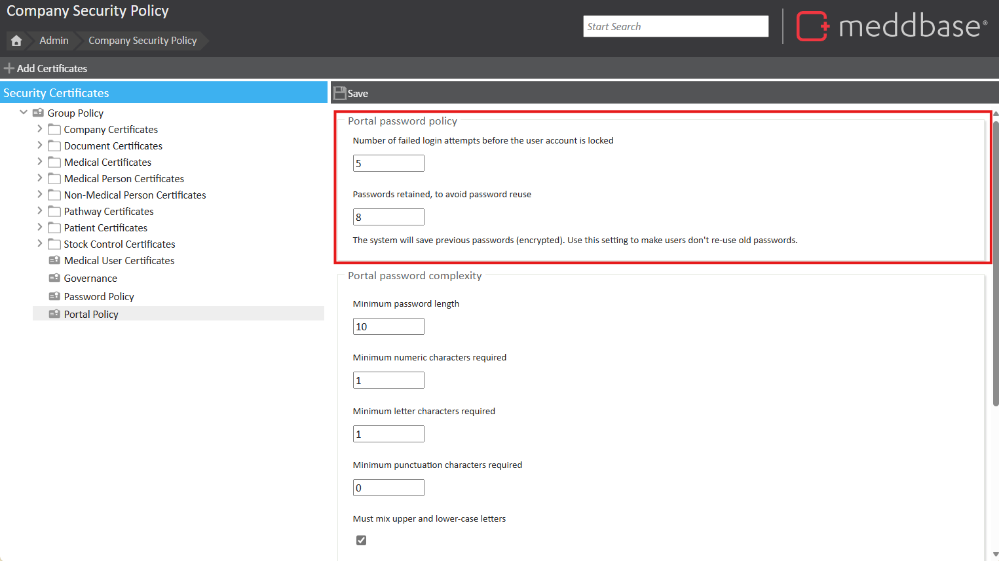
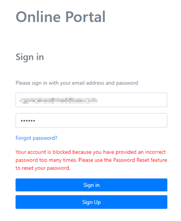
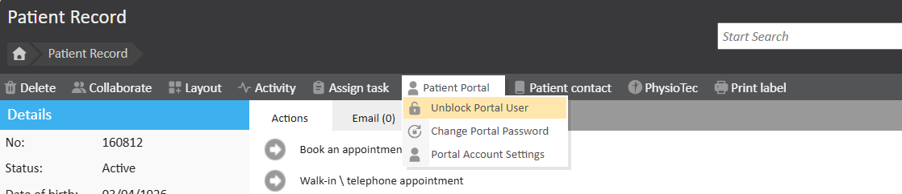
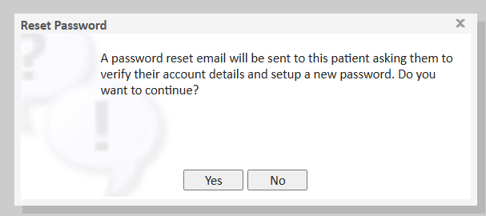
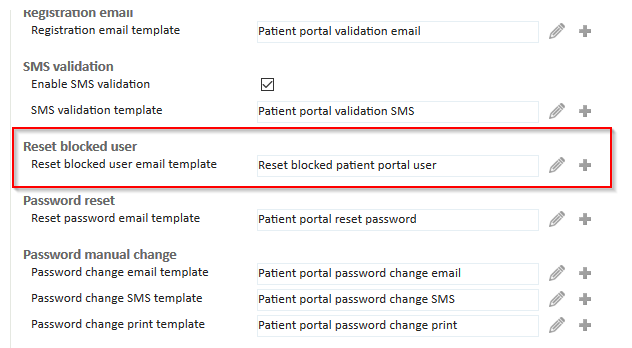

This article aims to explain the steps required if a patient attempts to log into the Patient Portal unsuccessfully on a set number of predefined occasions and as a result, they are locked out and would require a password reset by one of the Meddbase users.
The number of failed login attempts before being blocked is defined in Admin > Security Policy > Portal Policy. By default, the number of attempts is set to 5.

For more information regarding the patient portal, please see Patient Portal Setup.
The purpose of this article is to explain how to unblock a patient's account on the patient portal.
In this example, if a patient has 5 failed login attempts, they will see the following message:
"Your account is blocked because you have provided an incorrect password too many times. Please use the Password Reset Feature to reset your password".
Patients can click Forgot Password, to reset their password and gain access to the portal. A confirmation email will be sent to the patient confirming that their account was blocked and that they can now create a new password:
However, if the patient is unable to do it this way, users of the Meddbase chamber can do it on the patient's behalf.

Every time a patient is blocked, you will be able to view that status by going to Start Page>Patient>Search a Patient>Portal>Portal Account Settings. Once in there, a window will pop up and right at the top you will be able to see ‘Account State’: ‘Blocked’.
If the status is set to ‘Blocked’ the user can be unblocked by Start Page>Patient>Search a Patient>Patient Portal>Unblock Portal User.


The patient will then receive an email to be able to create a new password.
You will have a default template that will be used, giving the patient the information they need to get their account unblock and reset their password. This template can be customised from Start Page>Admin>Configuration>Online Portal and ‘Reset blocked user’
